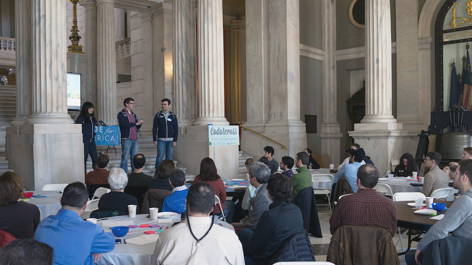
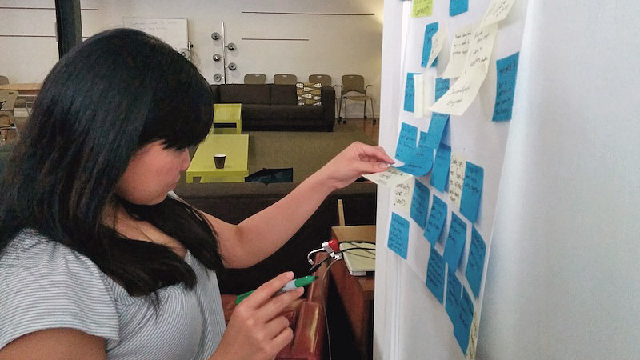
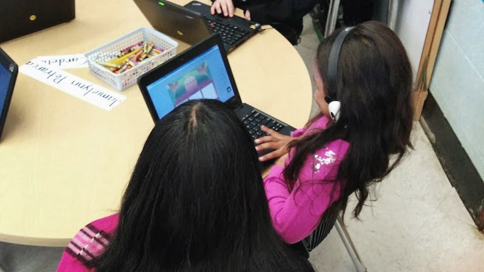
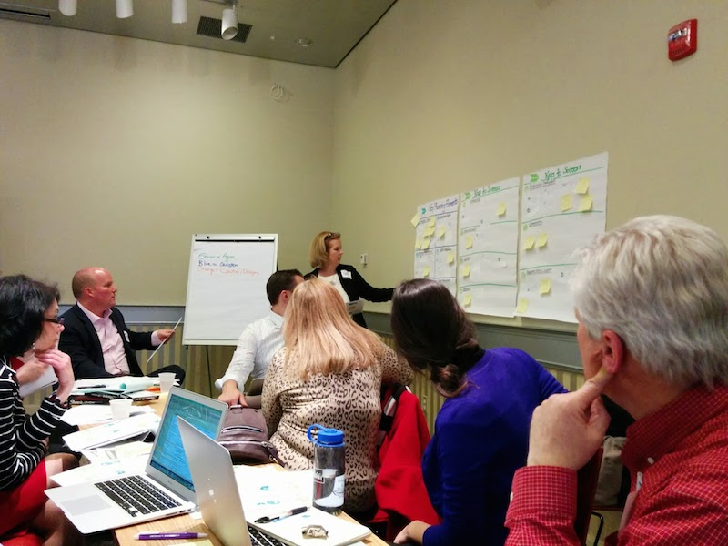

The first state accepted into the Code for America fellowship program, Rhode Island is currently investigating how open source software can empower its education ecosystem. In January, the State’s Office of Digital Excellence tasked three fellows with exploring ways to improve parental engagement, highlight educational resources within the State, reduce brain drain, and bridge the digital divide. Over the past few months, the fellows have collaboratively devised a number of solutions with a handful of cities in hopes that their efforts will eventually scale statewide.
Despite the relatively modest size (~1 million) of the population, Rhode Island has 54 different Local Education Agencies (LEAs), or districts, each with its own unique challenges and opportunities. During the month of February, the fellows met with school faculty and staff, policy makers, thought leaders, and community members—over 150 people—to find common challenges across the state. In addition, the fellows ran several focus groups at schools. By March the team generated over 180 project ideas (they’ve since been significantly narrowed).

The fellows welcome Rhode Islanders to the State’s first annual Code Across event from the State House.
In addition to the interviews they conducted, the fellows helped organize and launch a local Code for America chapter, or Brigade, during the month of February. The Brigade’s first meeting coincided with a national event known as Code Across. Rhode Island’s Code Across drew over 60 people from the local community (including developers, designers, State employees, impassioned community members and Providence’s Chief Information Officer), demonstrating that Rhode Island is hungry for opportunities to connect and collaborate. By the event’s end, the Brigade had devised a small group of projects to work on at future meetings.

Anna-Marie jots down ideas during a team brainstorming activity.
More recently, during the month of March, the fellows used wireframes and prototypes to collaboratively hone their area of focus. They returned to Rhode Island in April to conduct (IDEO-inspired) tests groups with students, teachers, and administrators. Along the way, they met with school support staff, including family outreach coordinators and school secretaries. This eventually led to the project that gained the most traction during the months of May and June: digitizing student registration.
A lifelong student of the design community, Andrew co-founded the design publication UX Booth in 2008 to share his journey. He currently serves as its Editor-in-Chief. When he’s not heading user-centered design initiatives for startups and corporations, Andrew enjoys reading and writing about design and media theory. He likes coffee, too.
Anna-Marie Panlilio
Anna-Marie is a full-stack web developer who loves fleshing out vague concepts and turning them into elegant and delightful experiences for people. She is excited about using civic tech to empower citizens to solve their own problems. When she’s not coding, Anna-Marie enjoys capturing dancers in mid-air with her camera. She studied journalism and urban studies at Northwestern University.
Jeff Maher
Hailing from Philadelphia, Jeff is a nerd who likes using his coding skills for good. Before joining Code for America, Jeff helped create a web platform for diabetes data at Johnson & Johnson, a crowd-sourced vacant parcel tracker called Reclaim Philly (via the Code for Philly Brigade), and a bike-parking locator. When he’s not civic coding, Jeff escapes from his computer screen with travel, hiking, and biking.
State Partner
Thom Guertin
Rhode Island’s first Chief Digital Officer, Thom heads the State’s Office of Digital Excellence. Thom’s office is charged with leveraging technology to provide citizens with increased access to government. Long before he came to work for the state, Thom was an instrumental member of the team that created Monster.com. After leaving Monster, Thom led large business technology projects at Acushnet and The Boston Globe / NY Times. He’s currently overseeing a host of digital initiatives, including: software to manage the RI Department of Motor Vehicles; the State’s healhcare exchange, HealthSourceRI; and the Code for America initiative.
Community Partners
Broadband Rhode Island (BBRI)
Broadband RI falls under the Department of Digital Excellence. The organization works to expand high-speed Internet access across the state. In addition, BBRI maintains an extensive digital literacy curriculum to reach those on the wrong end of the digital divide.
Rhode Island Foundation
The Rhode Island Foundation is a philathropic organization focused on improving educational outcomes, improving the economic environment, ensuring access to healthcare, and creating an environment that encourages further philanthropy. They are one of the RI Fellowship's principle funders.

Anna-Marie speaks with students in a Blended Learning classroom at Pleasant View Elementary
Part of Code for America’s organizational brilliance is its willingness to try new things. And being the organization’s first partnership at the state-level, the Rhode Island fellowship is particularly exemplary in this regard.
Rhode Island may be small, but it presents Code for America with unprecedented problems, including:
A larger geographic area to cover (for in-person meetings).
More hierarchical layers to consider.
More organizational diversity at each layer.
Increased attention to the ways that software limits or promotes political autonomy.
To address these challenges, the fellows have employed a two-part strategy. First, the fellows will address problem domains that are as specific as possible. This will limit the number of stakeholders that need to buy-in to any given initiative. Second, the fellows will pilot their applications in specific cities to learn and adapt their applications before attempting state-wide adoption.
Numerous avenues of inquiry lie at the intersection of civic-technology and education, including: open data, civic engagement, digital services, and much more. However, all of this fellowship team’s projects focus on two important aspects of the civic-tech movement: relationships and efficiency. All of the projects have the theme of improving the first impression or continuing relationship that residents of Rhode Island have with the school system. The better interactions are created through pleasant user experiences, but also by making these interactions more efficient (for both residents and administrators).
Making student registration electronic in a whimsical way can help create a better first impression that guardians have with their child’s school district. Ticket to RIDE (RIDE = R.I. Department of Education) is an application that turns the registration forms into a series of prompts to be answered during a train trip. Guardians are prompted for information about their child, themselves, their family situation (such as the need for free/reduced lunch), and the people that are connected to their families.
Opportunities
Humanizing Experience:
While the current paper forms currently used get the job done, a colorful and friendly request for registration information is a way to make guardians and their children feel more welcome and valued. The registration process is an opportunity to start the tone of the family/school relationship in a positive light, especially for guardians that may have felt disenfranchised during their own school years.
Efficiency:
Depending on the school district, it takes guardians anywhere from 15 to 60 minutes to complete registration forms. Much of this time is spent repeating information across pieces of paper, such as student’s name and address. Additionally, school secretaries need about 15 minutes to transcribe the forms into a Student Information System (SIS). By cutting down on repeat fields and reducing manual data entry, much time can be saved, especially in larger school districts.
Standardization:
Although each school district is reponsible for creating its own registration forms, many districts inevitably collect the same bits of information. They just do it in a different way. Standardizing this process not only removes the burden (and ambiguity) from individual school districts, it also allows RIDE to collect a consistent and reliable set of information around enrollment.
Environmentally/Cost Friendly:
The Cranston Public Schools enroll about 1000 kindergarteners each year. If there are five pieces of paper in each registration packet, this cuts down the amount of paper used by the school district. And, that’s just one school district and one grade level.
Strategy
The team started by collecting registration packets from several of the largest school districts in Rhode Island and determining what fields are in common on their enrollment forms. Additionally, the schools were consulted to see which pieces of information were left on paper copies and which were transcribed into their SIS. This analysis produced a list of data points that all schools relied on, but also which pieces of information are needed in some districts, but not others (such as Newport that collects military information because of the base in town and their funding). Additionally, the team determined the two most popular SISs used across the state (schools are mandated to use one of three) and identified schools that used them.
After creating a high-fidelity prototype, the team returned to Rhode Island to present it to several school districts to see if they'd be interesting in piloting the app and supporting its development through feedback and teaching us about their SIS import processes. Several school districts agreed to help, including Cranston, Newport, West Warwick, and the Paul Cuffee Charter School.
The strategy going forward includes:
Learn the import process used by Aspen and Skyward (the two most populare SISs in RI)
Identify customizations that schools have made to their SIS data models
Perform more user testing with guardians
Complete development of the guardian facing interface based on feedback
Develop an administrative interface that allows registration verification and export to the schools' SISs
Determine the project sustainer (either RIDE or RI Office of Digital Excellence)
Interface Designs
One approach being tried is using mad libs as the registration forms, making the process more whimsical and humanizingSchool secretaries and data managers can review information after guardians complete the registration flowWhen guardians come to the office with documentation, secretaries can check-off the documentation and then export data to the school’s student information system
MultiplyRI
This is a potential project, should the fellows find time to do within the space of the fellowship year.
Chances are if you are reading this, then you know how to use a computer and if you were asked to find computer classes, you might Google for it. Now imagine that you want to take a computer class, but don't possess the skills to search for one online or simply don't have a computer. It’s almost a chicken-and-egg problem for those without digital literacy and reveals a problem when trying to point folks without access to digital resources.
However, about 90% of adults in the USA have cell phones (~98% of adults 18-49 have cell phones). This presents a large opportunity to reach this population.
MultiplyRI is an SMS-based system that allows people with cell phones to locate computers, find a cheap Internet service provider, or locate digital literacy classes by sending a text message containing their address.
Strategy
Develop a system that performs the functionality described
Partner with Broadband RI to create a database of centers offering digital literacy courses and affordable Internet service providers by location
Partner with Sheila Dugan at EveryoneOn to partner on the initiative and/or supplement backing data with EveryoneOn's database
Working through Broadband RI, see if RIPTA (RI’s bus operators) can display ads with the MultiplyRI number
Interface Design
A user can text his/her address to find out where nearby computers, wifi, and ISPs are located. Another proposed option is 'class' to find digital literacy courses.
Pre-Kindergarten Lottery Enrollment
This is a potential project, should the fellows find time to do within the space of the fellowship year.
In Rhode Island, a child’s ability to attend a State sponsored pre-kindergarten program is determined by lottery per school. To make this a more fair process, RIDE has created a standardized lottery sign-up form. However, if a guardian wants to enter his/her child into multiple lotteries, this form needs to be filled out multiple times. A quick win is to create an electronic version of this form where a guardian can enter information once and apply to multiple schools.ß
Strategy
Create electronic version of the form for data collection
Implement an electronic version alongside the paper process
Eventually, run the lottery programmatically
Happy Faces
This is a potential project, should the fellows find time to do within the space of the fellowship year.
One of the prototypes that the team drew up early in the brainstorming process was a simple app that allowed teachers to complete exit surveys of their class. It involved students choosing an emotion (happy, frustrated, sad, excited, etc.) and explaining what about a day’s class made them feel this way. Not only does it help teachers gauge the feeling of their class, but it can also help them identify children that are feeling isolated or may need extra help to stay engaged.
The idea was really well received by focus groups conducted in April, but the uncertainty of who would own such an app within government was unclear and it was not made as the primary focus of the fellowship. During a visit back to RI in June, lots of folks asked about the app and the team may create it as a quick win, despite its unclear future.
In March, Anna-Marie introduced her former employer BrightBytes to Shawn Rubin and the Highlander Institute after Shawn shared his company’s need to quantify the readiness of K-12 Local Education Agencies for blended learning. BrightBytes went on to be a major sponsor the Highlander Institute’s annual Blended Learning Conference in May.
WordOut
The Rhode Island fellows deployed Twilio’s emergency response toolkit app for the Providence Student Union. The WordOut app allows the organizers to broadcast SMS messages to multiple numbers all at once and save them from having to send individual SMS messages during large events such as their recent Walk-to-school event which helped them get legislation passed to decrease the distance boundary for free bus passes for students from 3 miles to 2.5 miles.
Project 50 Green
Project 50 Green is a web application that serves as an anonymous mental health support group for teens at East Greenwich High School. The app lets the teens have conversations using hashtags via SMS, Twitter and the web. The support group was formed during the Choose2Matter event that the Rhode Island Fellows mentored at during their February residency.
Vendors
During the course of the fellowship thus far, the team has had exposure to many edtech and general tech vendors. Between this and getting a better understanding of school’s challenges, this have given the team a unique perspective into which existing products are most apt to suite their needs. This has allowed the team to make suggestions to schools and RIDE.
A Tale of Two Islands
A collaboration between Anna-Marie and San Juan Fellow Clara Gonzalez-Sueyro, this photo blog show cased the different, yet similar, environments that the two "island" fellowship teams experienced during February residency.
The Rhode Island Fellows and Thom were mentors at the Choose2Matter all-day event at East Greenwich High School in February. The event, which is organized by Angela Maiers, seeks to teach students skills relevant to the modern world by inspiring them to determine issues that break their heart. From there, they work on a call to action, develop an action plan, work with experts and professionals, review plans, and start to implement them.
Code Across 2014
The fellows helped organize Code Across 2014 in Providence. Attending Code Across were developers, designers, State employees, impassioned community members and Providence’s CIO. The event demonstrated that the RI community was hungry for a way to become involved in civic tech.
The even was hosted in Rhode Island’s beautiful State House (think: capitol) and was run as an ideathon. By just having the event generate ideas, it allowed many members of the community other than just developers to become involved and helped create initial directions for the new Brigade to pursue.
National Day of Civic Hacking
The Code Island Brigade hosted its first NDoCH event, a LocalWiki writeathon. The event was attended by Brigade members and created a framework for a RI LocalWiki instance by drafting a city/town/municipality outline for the state. After the outline was created, folks started writing articles about the different areas and things to do in them.
TD4ED
Thom participating in the design activities at TD4ED
The Business Innovation Factory launched a teacher professional development series called TD4ED which emphasizes using design thinking to improve schools. Design thinking is a huge tenant of Code for America, so the fellows and Thom joined several of the teacher teams for their first day, lending some experience and feedback on using empathy when trying to solve a problem and accomplish a goal.
URI Media Literacy Group
The team helps brainstorm ideas for creating a Digital Literacy Center in RI
Renee Hobbs and the University of Rhode Island Media Education Lab ran a series of focus groups on what Rhode Island needs to be more competitive from a Media Literacy standpoint. The fellows and Thom attended a focus group brainstorming ideas on what a Digital Literacy Center might look at and what ideas/teachings it would emphasize. The group later went onto publish a white paper which included contributions from the meeting the fellowship team attended.
RI Coalition

Brainstorming technology challenges that schools face
Led by RIDE and the Highlander Institute, this group meets to determine how schools can better support personalized and proficiency-based learning. The team attended the coalition’s kickoff event and brainstormed ideas and challenges that the group should keep in mind.
STEM Ed. Group by Andressen-Horowitz and Mr. October Foundation
Venture capital group Andressen-Horowitz hosted a group forum on efforts to improve STEM education for underprivileged children. CfA Fellowship Program Manager, Alex Tran, and Jeff attended their first meeting, offering to support idea facilitation, people/organization connections, and exploration of ideas via hackathons or 20% time projects.
The theme for CfA’s second monthly internal hackathon was education. The hackathon some groups develop quick apps that focused on improving parent/teacher interactions, making better school environments, teaching kids about maps, and how to create online curriculum for CfA that is shareable. Judges included local teachers, students, and school leaders.
Jeff describes Code for America to the Senate Commission
The fellows attended a RI Senate hearing where a commission of education policy makers discussed a future state-wide policy on the purchasing of textbooks for schools and how digital media fit into that strategy. The fellows formally introduced themselves to the commision and described what Code for America is and the goals of the fellowship program. It also provided first contact with folks from RIDE and the RI chapter of the NEA.
Girls in STEM Panel @ Buena Vista Horace Mann Middle School
Anna-Marie spoke on a panel and participated in a mentoring event with the San Francisco Citizens Initiative for Technology and Innovation (sf.citi) to empower and inspire middle school girls to pursue an education and career in technology and leadership.
Lifelong Learning Conference
Andrew attended the Rhode Island Lifelong Learning Conference in which adult educators met and discussed the ways in which they might better bridge the digital divide.
GIANT UX
Andrew gave a talk on digital media literacy at GIANT UX in Charleston, SC.